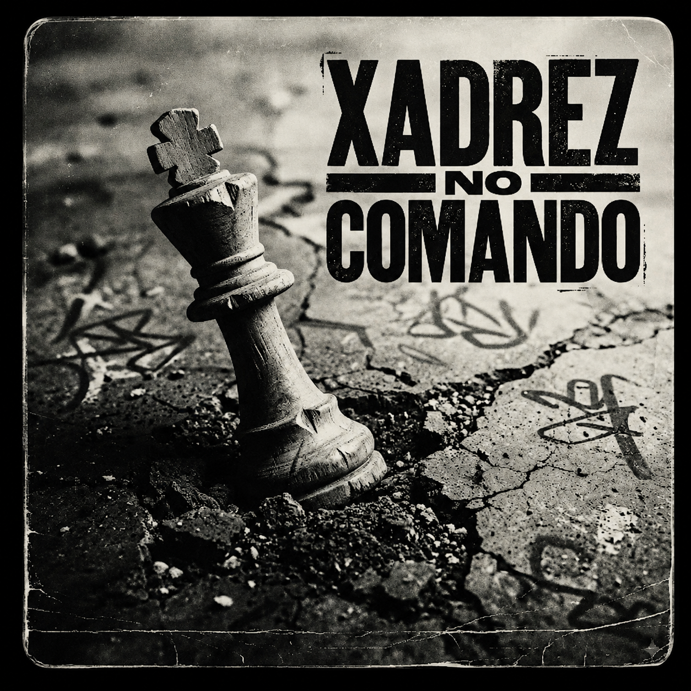

Cada peça tem uma dor. Cada movimento tem um preço.
Aprendi cedo que algumas pessoas entram no jogo já protegidas.
Nascem em casas silenciosas. Com comida no frigorífico. Com tempo para errar. Tempo para sonhar. Tempo para descobrir quem são.
Outras não.
Outras começam a partida encostadas à parede, a tentar sobreviver antes mesmo de perceberem as regras.
No bairro onde cresci, ninguém falava de xadrez.
Falava-se de contas. De respeito. De oportunidades que nunca chegavam inteiras. Falava-se de vizinhos cansados, mães fortes demais para descansar e homens que envelheciam cedo sem dar por isso.
Mesmo assim, olhando para trás, percebo que toda a gente se movia como peças.
Os peões acordavam primeiro.
Saíam cedo, regressavam tarde e carregavam o peso do tabuleiro inteiro sem quase nunca aparecerem na fotografia final. Eram os homens das obras, as mulheres do mercado, os miúdos que cresciam rápido demais porque a vida não lhes deu alternativa.
Os cavalos eram diferentes.
Nunca andavam em linha reta. Aprenderam cedo a sobreviver pelos lados, a escapar quando o mundo fechava portas pela frente. Alguns tornaram-se criativos. Outros perderam-se nos próprios desvios.
As torres eram os que resistiam.
Os que aguentavam tudo de pé mesmo rachados por dentro. Pais. Irmãos mais velhos. Mães silenciosas. Gente que transformava orgulho em armadura porque cair nunca pareceu uma opção.
E depois existiam os reis.
Toda a gente pensa que o rei manda.
Pouca gente percebe o medo constante de perder tudo num único movimento.
Demorei anos para perceber isto:
O tabuleiro muda de bairro para bairro... mas o jogo continua parecido.
Alguns jogam por dinheiro. Outros por orgulho. Outros só querem sair vivos.
No fundo, quase toda a gente está a tentar proteger alguma coisa: a família, o coração, o nome, a dignidade, os sonhos antigos ou a pequena versão de si próprio que ainda sobrevive por dentro.
A vida ensinou-me xadrez antes de eu saber o nome das peças.
Ensinou-me que há pessoas que sacrificam tudo para salvar os outros. Que há silêncios mais perigosos do que gritos. E que algumas derrotas começam muito antes do xeque-mate.
Hoje percebo que o jogo nunca foi apenas sobre vencer.
Foi sempre sobre outra coisa.
Sobre quem conseguimos continuar a ser... enquanto o mundo tenta mover-nos à força.
O peão é sempre o primeiro a avançar.
Talvez por isso me lembre tanto de quem cresceu sem escolha.
Gente que acordava cedo antes da cidade ter coragem de abrir os olhos. Gente que saía de casa ainda com o corpo cansado do dia anterior. Gente que não tinha tempo para falar de sonhos porque havia contas em cima da mesa, comida para garantir e filhos a olhar em silêncio.
No xadrez, o peão parece pequeno.
Na vida também.
Mas é quase sempre ele que carrega o começo da guerra.
Eu vi muitos peões no meu bairro.
Homens com as mãos gastas.
Mulheres com a alma cansada.
Miúdos que aprenderam a baixar a cabeça antes de aprenderem a levantar a voz.
Ninguém lhes chamava estratégicos.
Chamavam-lhes trabalhadores.
Chamavam-lhes desenrascados.
Chamavam-lhes "boa gente".
Mas sobreviver todos os dias sem perder completamente a ternura também é estratégia.
E talvez seja das mais difíceis.
O peão anda pouco.
Um passo de cada vez.
Sem teatro.
Sem aplauso.
Sem ninguém a dizer que aquilo também é coragem.
Mas há vidas que só puderam ser salvas assim: devagar. Com cuidado. Com medo. Com fome. Com fé no dia seguinte, mesmo quando o dia seguinte parecia igual ao anterior.
Durante muito tempo, eu achei que ser peão era ser fraco.
Achava que força era mandar. Era ter dinheiro. Era entrar num sítio e todos saberem o teu nome.
Depois cresci.
E percebi que há pessoas que seguram o mundo sem nunca se sentarem à mesa onde se decide o mundo.
A minha mãe foi peão muitas vezes.
Não porque fosse pequena.
Mas porque avançou mesmo quando ninguém abriu caminho.
Vi-a contar moedas como quem calcula movimentos. Vi-a esconder cansaço para não nos assustar. Vi-a perder coisas que queria para nos dar coisas de que precisávamos.
Nunca lhe ouvi chamar isso de sacrifício.
Chamava-lhe vida.
E talvez seja isso que mais dói nos peões: eles habituam-se a sofrer em silêncio.
Habituam-se a ser necessários, mas não vistos.
Habituam-se a ser fortes, mas não cuidados.
Habituam-se a dar tudo, até quando já quase não têm nada.
No xadrez, quando um peão chega ao fim do tabuleiro, pode transformar-se noutra peça.
Na vida, quase ninguém conta essa parte.
Quase ninguém diz que alguns peões atravessam o tabuleiro inteiro sem se transformarem em nada aos olhos dos outros.
Continuam com o mesmo nome.
A mesma roupa simples.
A mesma conta apertada.
As mesmas mãos marcadas.
Mas por dentro, já são outra coisa.
São memória.
São aviso.
São raiz.
São prova de que a dignidade também sabe andar de cabeça baixa sem deixar de ser dignidade.
Hoje, quando vejo alguém levantar cedo para trabalhar num mundo que raramente agradece, penso no peão.
Penso na coragem silenciosa de quem avança sem garantias.
Um passo.
Depois outro.
Depois outro.
Porque às vezes sobreviver não é uma grande jogada.
É só não desistir da próxima casa.
No bairro, os caminhos nunca eram retos.
Talvez por isso eu tenha aprendido cedo a mover-me de lado.
Havia portas que não se abriam para nós.
Havia olhares que nos fechavam antes mesmo de falarmos.
Havia futuros que pareciam reservados para outros nomes, outras casas, outros códigos postais.
Então aprendíamos desvios.
Aprendíamos a chegar sem sermos esperados.
A sair antes de sermos apanhados.
A rir quando a vontade era desaparecer.
A parecer calmos quando por dentro estava tudo em guerra.
O cavalo é a peça mais estranha do tabuleiro.
Não anda como os outros.
Salta.
Passa por cima.
Faz curvas onde o mundo só entende linhas.
Durante muito tempo, achei isso bonito.
Depois percebi que nem todo o desvio é liberdade.
Às vezes, uma pessoa aprende a contornar tanto a dor que deixa de saber atravessá-la. Aprende a fugir tão bem que confunde movimento com caminho. Aprende a sobreviver em ziguezague e chama isso de personalidade.
Eu conheci muitos cavalos.
Miúdos inteligentes demais para a idade que tinham.
Homens engraçados que escondiam tristeza atrás de piadas.
Mulheres que faziam milagres com pouco e ainda pediam desculpa por existir.
Gente que nunca teve estrada limpa, mas mesmo assim chegou a algum lado.
Também conheci outros.
Os que se perderam no próprio salto.
Começaram a desviar-se da pobreza. Depois da polícia. Depois da família. Depois de si próprios.
E quando deram por isso, já não sabiam voltar em linha reta para casa.
A rua ensina criatividade.
Mas cobra caro.
Ensina a ler rostos depressa.
A perceber perigo antes dele falar.
A sentir quando uma conversa mudou de temperatura.
A saber quem está a mentir só pelo silêncio que deixa depois da frase.
Isto não aparece nos currículos.
Ninguém escreve no papel:
"Sobreviveu a ambientes instáveis."
"Aprendeu estratégia emocional antes da adolescência."
"Consegue detectar ameaça numa sala antes dos adultos perceberem."
Mas essas coisas também são conhecimento.
Conhecimento cansado. Conhecimento sem diploma. Conhecimento que às vezes salva.
O problema é que o corpo não esquece o preço.
Mesmo quando a vida melhora, há pessoas que continuam a mover-se como se ainda estivessem cercadas.
Não atendem certas chamadas.
Não confiam em certas pazes.
Não descansam em certos silêncios.
Não acreditam completamente quando alguém diz: "está tudo bem."
Porque houve um tempo em que nunca estava.
E o cavalo lembra-se.
Lembra-se de cada portão fechado. De cada humilhação engolida. De cada plano feito à pressa. De cada vez em que teve de parecer mais esperto do que assustado.
Talvez seja por isso que tenho respeito por quem se move diferente.
Nem toda a curva é desonestidade.
Nem todo o salto é fuga.
Nem toda a pessoa difícil nasceu difícil.
Algumas só aprenderam a sobreviver num tabuleiro onde andar em frente era perigoso.
Hoje tento julgar menos os caminhos tortos.
Às vezes, antes de alguém se perder, só estava a tentar encontrar uma saída.
E às vezes, antes de alguém parecer complicado, foi apenas obrigado a tornar-se estratégico cedo demais.
O bispo anda na diagonal.
Talvez por isso me lembre das pessoas que veem a vida de lado.
Não porque sejam estranhas.
Mas porque o mundo nunca lhes apareceu de frente.
Há gente que aprende cedo que a verdade raramente vem inteira. Vem aos bocados. Vem em olhares. Em portas meio fechadas. Em conversas interrompidas quando uma criança entra na sala.
Um rádio baixo na cozinha.
Uma conta dobrada ao lado do pão.
Uma criança fingindo que não ouviu a discussão no quarto.
No bairro, havia muita coisa que ninguém explicava.
A gente percebia.
Percebia quando o dinheiro não chegava.
Percebia quando alguém estava a beber para esquecer.
Percebia quando uma mãe dizia "está tudo bem" com os olhos cheios de outra coisa.
Sentia quando a casa mudava de peso antes de alguém bater a porta.
As crianças dos sítios difíceis tornam-se especialistas em diagonais.
Aprendem a ler o ar.
A medir silêncios.
A escutar paredes.
A sentir a tristeza dos adultos antes de saberem escrever a palavra tristeza.
Durante muito tempo, pensei que isso era inteligência.
Hoje acho que também era defesa.
Quem cresce em paz pode dar-se ao luxo de ser distraído.
Quem cresce em tensão aprende a reparar no invisível.
O bispo não atravessa o tabuleiro como a torre. Não impõe presença. Não faz barulho. Não parece mandar em nada.
Mas vê longe.
E às vezes ver longe é uma bênção com dentes.
Porque há coisas que uma pessoa percebe antes de estar preparada para carregar.
Eu vi demasiado cedo que os adultos também tinham medo.
Vi que amor nem sempre chega.
Vi que trabalhar muito não garante justiça.
Vi que pessoas boas também perdem.
Vi que há casas cheias de gente onde cada um está sozinho à sua maneira.
Essas verdades não chegam como lições.
Chegam como marcas.
A fé também morava ali.
Não a fé bonita dos discursos.
A fé cansada.
A fé de quem acende uma vela porque já não sabe o que fazer com as mãos.
A fé de quem diz "Deus queira" quando a esperança ficou pequena demais para ser chamada esperança.
A fé de quem continua a pôr a mesa mesmo sem saber se amanhã haverá o suficiente.
Eu nunca soube bem se acreditava.
Mas respeitei sempre quem precisava acreditar para não cair.
Há pessoas que não têm terapia.
Não têm descanso.
Não têm ninguém a perguntar: "como estás mesmo?"
Têm uma oração baixa. Uma medalha ao peito. Uma fotografia guardada. Uma frase antiga repetida como quem segura uma parede com os ombros.
E quem sou eu para chamar ilusão ao que manteve alguém vivo?
O bispo ensina-me isso.
Que nem tudo o que salva precisa ser explicado.
Que há forças que se movem em silêncio, por dentro das pessoas, sem pedir autorização ao mundo.
Também me ensinou o perigo de ver demais.
Porque quem mede tudo, às vezes participa pouco.
Fica à margem.
Analisa tudo.
Entende tudo.
Perdoa demais.
Cala demais.
E quando dá por si, passou anos a compreender a dor dos outros sem nunca ter perguntado o que fazer com a sua.
Eu fui assim muitas vezes.
Olhava para as pessoas e tentava descobrir de onde vinha a dureza delas.
Se alguém gritava, eu procurava a ferida.
Se alguém traía, eu procurava o medo.
Se alguém desaparecia, eu procurava a vergonha.
Talvez isso fosse compaixão.
Talvez fosse só uma forma elegante de evitar a minha própria raiva.
Há uma idade em que entender tudo começa a cansar.
Uma pessoa percebe que pode ter empatia sem se abandonar. Pode ver os ângulos todos e ainda assim escolher uma direção. Pode compreender quem a feriu sem transformar essa compreensão numa prisão.
Hoje continuo a olhar na diagonal.
É da minha natureza.
Mas já não quero viver apenas a interpretar sinais.
Quero também estar presente.
Dizer sim quando for sim.
Dizer não quando for não.
Sair quando ficar me diminui.
Ficar quando o amor for limpo.
Porque ver longe não serve de muito se uma pessoa nunca aprende a mover-se em direção à própria paz.
A torre não se desvia.
Vai em frente.
Firme.
Direta.
Quase dura.
Talvez por isso eu a associe às pessoas que aprenderam a aguentar.
No bairro, havia muita gente assim.
Gente que não falava muito. Gente que chegava a casa com os ombros pesados. Gente que se sentava à mesa em silêncio, como se o corpo ainda estivesse no trabalho.
E havia casas que pareciam torres.
Não por serem grandes.
Mas porque toda a gente lá dentro dependia de alguém que não podia cair.
Uma mãe que segurava filhos, contas, dores antigas e ainda perguntava se os outros tinham comido.
Um pai que não sabia dizer "tenho medo", então dizia "isto resolve-se".
Um irmão mais velho que virou adulto antes de tempo porque alguém tinha de tomar conta dos mais novos.
A torre é resistência.
Mas também é prisão.
Porque quando toda a gente se habitua a ver-te de pé, quase ninguém pergunta se estás cansado.
Esperam que aguentes.
Que resolvas.
Que carregues.
Que não compliques.
Que não desabes no meio da sala.
Há pessoas que passam a vida inteira a ser parede.
Encostam-se nelas. Batem nelas. Pendura-se tudo nelas.
E quando começam a rachar, ainda pedem desculpa pelo pó.
Eu vi isso muitas vezes.
Vi mulheres a chorar na casa de banho e a sair com a cara lavada como se nada tivesse acontecido.
Vi homens a engolir tristeza em garfos de comida fria.
Vi avós a guardar notas pequenas em envelopes antigos para salvar meses inteiros.
Ninguém chamava isso de heroísmo.
Era só a vida.
Essa frase aparece muito nos bairros.
"É a vida."
Como se a vida fosse uma sentença e não uma coisa que também devia cuidar de nós.
A torre ensina postura.
Ensina-nos a não fugir ao primeiro impacto. A proteger quem está atrás. A manter a casa de pé quando o vento entra por todos os lados.
Mas também pode ensinar uma mentira perigosa:
que sentir é fraqueza.
E eu acreditei nisso durante muito tempo.
Achei que ser forte era não pedir. Não tremer. Não explicar. Não precisar de ninguém.
Achava bonito aguentar calado.
Hoje já não acho.
Hoje sei que há silêncios que não são dignidade.
São feridas sem testemunha.
Há uma diferença entre resistência e abandono de si próprio.
Resistência é continuar quando é preciso.
Abandono é continuar sempre, mesmo quando a alma já está a pedir descanso.
Vi muita gente confundir as duas coisas.
Eu também confundi.
Durante anos, fui construindo paredes por dentro.
Uma para a vergonha.
Outra para a raiva.
Outra para a tristeza.
Outra para todas as vezes em que precisei de colo e recebi conselhos.
Por fora, parecia estabilidade.
Por dentro, era isolamento bem organizado.
A torre tem força, sim.
Mas força sem movimento vira dureza.
E dureza prolongada começa a parecer carácter, quando às vezes é só cansaço antigo.
Há pessoas que não são frias.
Só estão há demasiado tempo a tentar não partir.
Isto mudou a forma como olho para os fortes.
Hoje, quando alguém diz "eu aguento", eu escuto melhor.
Porque às vezes essa frase não significa poder.
Significa hábito.
Significa que aquela pessoa nunca teve autorização para cair.
E ninguém devia passar a vida inteira a provar que merece descanso.
Nem toda a torre precisa ficar de pé até ao fim.
Às vezes, também é coragem encostar.
Pedir ajuda.
Sentar.
Chorar.
Dizer: "não consigo sozinho."
No xadrez, a torre protege linhas inteiras.
Na vida, também.
Mas até as paredes precisam de fundação.
Até quem segura tudo precisa ser segurado.
E talvez a verdadeira força não seja aguentar sempre.
Talvez seja aprender o momento certo de deixar alguém aproximar-se sem achar que isso nos diminui.
A rainha move-se em todas as direções.
Talvez por isso, durante muito tempo, eu tenha pensado nela como poder.
Hoje penso nela como cansaço.
Porque há forças que parecem infinitas só porque ninguém lhes deu permissão para parar.
No bairro, as rainhas raramente usavam coroa.
Usavam avental. Usavam bata. Usavam cabelo preso à pressa. Usavam sacos de compras em cada mão e uma preocupação antiga no rosto.
E mesmo assim, chegavam a todo o lado.
À cozinha.
Ao trabalho.
À escola dos filhos.
Ao hospital.
À repartição.
À casa de alguém que precisava.
A rainha era mãe, avó, tia, vizinha.
Era a mulher que sabia quem tinha comido, quem estava doente, quem precisava de boleia, quem andava triste, quem estava a mentir quando dizia "está tudo bem".
Havia sempre uma mulher a segurar o mundo sem o mundo perceber.
Uma mulher a fazer contas de cabeça enquanto mexia a panela.
Uma mulher a dobrar roupa de madrugada.
Uma mulher a transformar pouco em suficiente, e suficiente em milagre.
Eu cresci rodeado por esse tipo de poder.
Só que, na altura, não lhe chamava poder.
Chamava normal.
Normal era ver uma mãe cansada continuar. Normal era ver uma avó guardar o melhor pedaço para os outros. Normal era uma mulher engolir preocupação para a casa não perder o chão.
É estranho como a gente demora a reconhecer aquilo que sempre nos salvou.
No xadrez, perder a rainha muda a partida inteira.
Na vida também.
Há ausências que não ocupam espaço.
Tomam conta dele.
Uma cadeira vazia.
Uma voz que já não chama da cozinha.
Um perfume que aparece do nada numa rua qualquer.
Uma receita que ninguém consegue fazer igual.
A perda de uma rainha não é só tristeza.
É desorganização do mundo.
De repente, ninguém sabe onde estão certas coisas. Ninguém sabe dizer certas palavras. Ninguém sabe acalmar a casa da mesma maneira.
E é aí que percebemos que algumas pessoas eram muito mais do que presença.
Eram direção. Eram abrigo. Eram memória viva de quem fomos antes de endurecermos.
Eu aprendi tarde que o amor também pode ser estratégia.
Não aquela estratégia fria de quem quer vencer alguém.
Mas a estratégia de manter gente viva.
De lembrar aniversários. De insistir numa chamada. De pôr comida num prato. De dizer "leva casaco" quando a pessoa já é adulta, mas continua a ser criança em algum lugar dentro dela.
Durante muito tempo, confundi amor com grandes gestos.
Depois vi mulheres salvarem famílias com gestos pequenos.
Um tacho ao lume.
Uma mão na testa.
Uma mentira piedosa para não assustar os filhos.
Um "come mais um bocadinho" dito como oração.
As rainhas do meu bairro sabiam mover-se em todas as direções porque a vida exigia isso delas.
Mas havia uma direção que quase nunca lhes ensinavam:
para dentro.
Para o próprio descanso. Para o próprio desejo. Para a própria tristeza. Para a própria liberdade.
Muitas viveram para os outros até se esquecerem de onde começavam.
E nós, que fomos amados por elas, também temos culpa.
Porque nos habituámos ao milagre.
Habituámo-nos à mesa posta. À roupa limpa. À pergunta certa na hora certa. À força sempre disponível.
E esquecemo-nos de perguntar:
"E tu?"
Só isso.
"E tu?"
O que queres?
O que perdeste?
O que sonhavas antes de toda a gente precisar de ti?
Onde dói quando ninguém está a ver?
Há perguntas que chegam tarde.
Mas mesmo tarde, precisam ser feitas.
Porque amar uma rainha não pode ser apenas depender dela.
Tem de ser vê-la.
Inteira.
Não só mãe.
Não só esposa.
Não só avó.
Não só cuidadora.
Não só a pessoa que resolve.
Pessoa.
Com medo. Com desejo. Com memórias. Com cansaços. Com partes de si que nunca tiveram tempo de nascer.
Hoje, quando penso na rainha, penso menos em domínio e mais em entrega.
Penso em todas as mulheres que fizeram do amor uma forma de resistência.
Penso nas que ficaram.
Nas que partiram.
Nas que ainda estão aqui, mas nunca foram realmente cuidadas.
E se este livro tiver alguma justiça, que seja esta:
dizer que elas não eram fortes porque não sofriam.
Eram fortes porque sofriam e, mesmo assim, continuavam a proteger a vida.
Mas talvez a próxima geração precise aprender outra coisa.
Que uma rainha também tem direito a pousar a coroa.
Mesmo quando a coroa é invisível.
Mesmo quando ninguém sabe o quanto pesa.
Toda a gente pensa que o rei manda.
Foi uma das primeiras mentiras que aprendi sem ninguém me dizer.
No xadrez, o rei é a peça mais importante.
Mas também é a mais limitada.
Anda pouco.
Depende dos outros.
Vive cercado de proteção e ameaça.
Se cair, acaba o jogo.
Talvez por isso eu tenha pensado tantas vezes nos homens que conheci.
Homens que pareciam grandes vistos de fora.
Grandes na voz. Grandes no orgulho. Grandes na forma como entravam numa sala e ocupavam espaço.
Mas de madrugada, quando a casa ficava quieta, muitos deles eram só medo com nome próprio.
Lembro-me do som das chaves a cair na mesa sem uma palavra.
Do prato aquecido duas vezes.
Da televisão ligada para ninguém ter de falar.
Medo de falhar. Medo de não conseguir sustentar. Medo de perder respeito. Medo de ser visto como pequeno. Medo de que alguém descobrisse que por dentro também tremiam.
Ninguém ensinava os homens do meu bairro a dizer "tenho medo".
Ensinavam-nos a dizer:
"Está tudo controlado."
"Eu resolvo."
"Não preciso de ninguém."
"Deixa comigo."
Frases bonitas.
Frases perigosas.
Porque às vezes um homem passa a vida inteira a representar segurança enquanto se afunda em silêncio.
Eu vi homens assim.
Homens bons que não sabiam ser suaves.
Homens feridos que confundiam dureza com autoridade.
Homens cansados que chegavam a casa sem linguagem para explicar o peso do dia.
Uma camisa pendurada na cadeira.
Um copo deixado no lava-loiça.
Um suspiro tão baixo que parecia vergonha.
Alguns amavam mal porque nunca tinham sido ensinados a amar sem armadura.
Davam dinheiro, mas não davam palavras.
Davam presença, mas não davam ternura.
Davam regras, mas não davam colo.
E, mesmo assim, queriam ser compreendidos.
Há dores que não justificam o estrago que causam.
Mas explicam muita coisa.
Com o tempo, comecei a perceber que muitos reis não queriam mandar.
Queriam não desaparecer.
Queriam sentir que ainda tinham valor num mundo que mede um homem pelo que ele consegue pagar, vencer, carregar ou esconder.
E quando um homem acredita que só vale enquanto aguenta, qualquer sinal de fragilidade parece uma ameaça ao trono.
Por isso grita.
Por isso foge.
Por isso bebe.
Por isso controla.
Por isso se fecha.
Nem sempre por maldade.
Às vezes por pânico.
Mas o pânico de um rei pode destruir uma casa inteira.
Foi isso que demorei a entender.
Que a dor de um homem não pode virar lei para os outros.
Que o medo dele não pode ser governo.
Que a ferida dele não pode ser desculpa.
Que o silêncio dele não pode obrigar toda a gente a viver em cuidado permanente.
Ser rei não é mandar.
É responder pelo impacto dos próprios movimentos.
E talvez essa seja a maturidade que ninguém nos ensina cedo:
perceber que aquilo que não curamos em nós acaba por governar alguém.
Durante anos, achei que crescer era tornar-me invencível.
Hoje acho que é o contrário.
Crescer é deixar de precisar parecer invencível o tempo todo.
É conseguir dizer:
"Não sei."
"Tenho medo."
"Errei."
"Preciso de ajuda."
"Desculpa."
Sem sentir que cada palavra dessas nos tira a dignidade.
No tabuleiro, o rei sobrevive porque aprende a depender.
Na vida também.
Nenhum homem se salva sozinho.
Nenhuma família se sustenta só com orgulho.
Nenhum amor aguenta eternamente uma pessoa que nunca se deixa alcançar.
Talvez o verdadeiro comando comece quando um homem deixa de confundir controlo com cuidado.
Quando entende que proteger não é dominar.
Que liderar não é calar os outros.
Que força não é ausência de lágrimas.
Que respeito não nasce do medo.
Eu ainda estou a aprender isso.
A desaprender certas heranças. A desmontar certas frases. A reconhecer dentro de mim gestos que não quero repetir.
Porque todos nós carregamos reis antigos por dentro.
Vozes.
Posturas.
Medos.
Maneiras de amar que herdámos antes de saber escolher.
Mas também podemos interromper a linhagem.
Podemos ser o primeiro homem da casa a pedir desculpa sem se diminuir.
O primeiro a falar sem gritar. O primeiro a cuidar sem controlar. O primeiro a admitir cansaço antes de virar pedra.
Talvez seja isso comandar.
Não vencer todos.
Não dominar o tabuleiro.
Mas aprender a mover-se com consciência do que cada passo pode causar em quem está perto.
Porque no fim, um rei não se mede pelo número de peças que protegeu em público.
Mede-se pelo que fez quando ninguém estava a aplaudir.
Pelo amor que não precisou assustar ninguém para ser respeitado.
Pela coragem de continuar humano quando o mundo lhe exigia dureza.
Há momentos em que a vida nos encosta ao canto.
Não pergunta se estamos prontos.
Não espera que a gente entenda.
Não dá tempo para organizar o coração.
Não explica as regras antes de mudar o jogo.
Acontece.
Uma chamada de madrugada.
Uma porta que se fecha de vez.
Um nome que deixa de aparecer no ecrã.
Uma cadeira que fica vazia à mesa.
E, de repente, tudo o que parecia firme começa a tremer.
No xadrez, o xeque é aviso.
Ainda há saída.
Ainda há movimento.
Ainda há uma casa possível.
Mas há fases da vida em que o aviso chega atrasado.
Quando percebemos, já estamos cansados demais. Orgulhosos demais. Feridos demais. Longe demais de quem fomos.
E é aí que o jogo fica sério.
Porque nem todo xeque-mate acontece de uma vez.
Às vezes, começa devagar.
Com uma conversa que não tivemos. Com uma desculpa que adiámos. Com uma ausência repetida até virar costume. Com uma raiva pequena guardada todos os dias no mesmo sítio.
Uma chávena deixada no lava-loiça.
Uma mensagem escrita e apagada.
Uma luz acesa no corredor sem ninguém a passar.
Depois, um dia, a pessoa olha para a própria vida e não reconhece a casa onde está.
Não reconhece a voz.
Não reconhece o amor.
Não reconhece o rosto no espelho.
E pergunta:
"Como é que vim parar aqui?"
Eu já fiz essa pergunta.
Mais do que uma vez.
Há derrotas que ninguém vê.
A pessoa continua a trabalhar. Continua a responder mensagens. Continua a rir nas horas certas. Continua a aparecer nas fotografias.
Mas por dentro perdeu uma partida inteira.
Ninguém repara porque o corpo ainda se mexe.
E há corpos que continuam muito tempo depois da alma pedir intervalo.
No bairro, muita gente chamava isso de força.
Eu hoje chamo de sobrevivência sem testemunha.
O xeque-mate pode ser uma perda.
Mas também pode ser uma revelação.
Pode ser o momento em que a mentira já não sustenta a casa. O momento em que o orgulho deixa de proteger e começa a prender. O momento em que continuar igual custa mais do que mudar.
Nem todo fim é castigo.
Alguns fins são misericórdia atrasada.
Há portas que doem quando fecham.
Mesmo assim, às vezes, depois do barulho da fechadura, vem um silêncio diferente.
Não paz.
Ainda não.
Mas espaço.
Um quarto onde finalmente se ouve a própria respiração.
Uma cama feita só de um lado.
Um telefone que já não se espera que toque.
Isto não torna a dor bonita.
Dor é dor.
Não precisa de poesia para existir.
Às vezes é só um quarto escuro. Uma mensagem sem resposta. Um café frio. Uma camisa que ainda cheira a alguém. Uma vontade enorme de voltar ao antes, mesmo sabendo que o antes já não existe.
Mas existe uma maturidade estranha que nasce depois do fim.
Não vem com música. Não vem com luz. Não vem com frases bonitas.
Vem pequena.
Como quem se levanta só para abrir a janela.
Como quem come alguma coisa porque alguém insistiu. Como quem responde "estou aqui" mesmo sem saber exatamente onde está por dentro. Como quem começa a arrumar uma gaveta e, sem querer, arruma um pedaço da vida.
Depois de certas partidas, a gente não volta igual.
Voltar igual até seria uma ofensa ao que se atravessou.
Perder também ensina.
Ensina quem ficou. Quem fugiu. Quem só gostava da nossa vitória. Quem nos amava mesmo no chão.
Ensina devagar.
Num domingo demasiado comprido.
Numa fotografia antiga encontrada sem aviso.
Num lugar da mesa que ninguém ocupa da mesma maneira.
O xeque-mate não é sempre o fim da vida.
Às vezes é o fim da ilusão.
E isso também dói.
Porque há ilusões que nos fizeram companhia durante anos.
A ideia de que um dia certas pessoas iam mudar. A ideia de que aguentar tudo nos tornava melhores. A ideia de que ser amado era provar constantemente o nosso valor. A ideia de que sair era fracassar.
Mas quando a ilusão cai, sobra uma coisa difícil:
a verdade.
E a verdade, no início, parece vazia.
Depois começa a parecer espaço.
Espaço para respirar.
Para escolher.
Para pedir perdão.
Para não voltar.
Para voltar diferente.
Para finalmente entender que comando não é controlar o jogo inteiro.
Comando é responder ao que acontece sem abandonar quem somos.
Hoje, quando penso em xeque-mate, penso menos em derrota e mais em consequência.
Cada movimento contou.
Os que fizemos. Os que evitámos. Os que alguém fez contra nós. Os que deixámos de fazer por medo.
A vida não esquece movimentos.
Mas também não é só castigo.
Às vezes, mesmo depois do xeque-mate, existe outro tabuleiro.
Não igual.
Nunca igual.
Mas existe.
E talvez crescer seja isso:
aceitar que algumas partidas terminam para que a gente pare de tentar vencer no lugar onde estava a desaparecer.
No fim, o tabuleiro fica em silêncio.
As peças param.
A mão que antes calculava tudo afasta-se devagar.
E só aí percebemos o cansaço.
Durante muito tempo, achei que vencer era chegar ao outro lado sem perder nada.
Hoje sei que isso quase nunca acontece.
A vida leva peças.
Leva certezas.
Leva pessoas.
Leva versões nossas que pensávamos eternas.
E, mesmo assim, às vezes continuamos.
Não por coragem bonita.
Mas porque há contas para pagar. Há alguém a chamar o nosso nome. Há uma luz acesa na cozinha. Há manhãs que chegam mesmo quando a noite não foi embora por dentro.
O fim de jogo não é sempre vitória.
Também não é sempre derrota.
Às vezes é só lucidez.
O som da rua já era outro.
Mas a mesa continuava marcada pelos mesmos copos.
A capacidade de olhar para trás e dizer:
"Eu fiz o que consegui com o que sabia."
Isso não apaga os erros.
Não devolve quem partiu.
Não desfaz palavras ditas no momento errado.
Não limpa todas as marcas.
Mas talvez permita respirar.
Há partidas que eu jogaria diferente hoje.
Pessoas a quem teria pedido desculpa mais cedo. Portas que teria fechado com menos culpa. Silêncios que teria quebrado antes de se tornarem paredes.
Mas ninguém amadurece a tempo de evitar tudo.
A gente aprende depois.
Depois da queda. Depois da perda. Depois da frase que não volta. Depois de entender que orgulho nenhum aquece uma casa vazia.
Se há alguma sabedoria neste livro, talvez seja pequena.
Não é a sabedoria de quem venceu.
É a de quem observou.
Quem viu peões sustentarem mundos. Cavalos encontrarem saídas onde só havia muro. Bispos lerem tristezas escondidas. Torres aguentarem até esquecerem de si. Rainhas salvarem vidas com gestos pequenos. Reis aprenderem, tarde, que mandar não é comandar.
E depois de ver tudo isso, já não consigo olhar para ninguém como peça simples.
Toda a gente carrega uma partida invisível.
Um medo.
Uma promessa.
Uma perda.
Uma casa antiga dentro do peito.
Um nome que ainda dói quando aparece sem aviso.
Por isso tento julgar menos.
Não por ingenuidade.
Mas porque sei que há movimentos que só fazem sentido quando conhecemos o tabuleiro inteiro.
E quase nunca conhecemos.
Uma cadeira vazia explica mais do que muita teoria.
Uma porta fechada também.
Um prato posto para alguém que já não vem.
O fim de jogo ensina humildade.
Ensina que vencer sozinho pode parecer triunfo, mas às vezes é só solidão bem vestida.
Ensina que perder nem sempre nos destrói.
Às vezes, tira-nos do lugar onde estávamos a endurecer.
Hoje, se penso em comando, já não penso em controlo.
Penso em consciência.
Em escolher melhor quando a raiva pede pressa.
Em proteger sem prender.
Em amar sem possuir.
Em sair sem destruir.
Em ficar sem desaparecer.
Penso em mover-me sabendo que cada passo toca alguém.
Talvez seja isso crescer.
Não tornar-se invencível.
Mas tornar-se responsável.
Pelo que fazemos com a dor. Pelo que repetimos sem questionar. Pelo que curamos antes de passar adiante. Pelo tipo de presença que deixamos no mundo.
No fim, ninguém sai igual do tabuleiro.
Alguns saem mais duros. Outros mais atentos. Outros finalmente livres.
Eu ainda estou a aprender a jogar.
Mas já sei isto:
a vida ensinou-me xadrez antes de eu saber o nome das peças.
E se hoje tento estar no comando, não é para vencer toda a gente.
É para não me perder de mim.
Xadrez no Comando